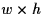

Subsections
Revision: 2.37
Date: 2001/03/02 16:38:05
Author: Jürgen Fuhrmann
This module provides access to basic facilities as X window
management, event handling, off screen rendering etc. It has been
derived from the OpenGL sample tk code by putting all global
variables into a structure called glWindow. Not everything has
been checked, especially not the color index stuff. I is the
intention of the author to keep track of changes in the libtk
toolkit.
There are three main difference to the libtk kit:
- glwin is able to to manage more than one window at one
time. This has been achieved by wrapping all global variables of
libtk into a (hidden) data type glWindow and letting
the user provide data to all callback routines via a void*
parameter.
- The event loop (called by glwProcess()) knows an
application-controlled and an event-controlled (user-controlled)
mode.
In application-controlled mode it is possible to attach a GL
window, let it process any pending events, render user data and
exit without destroying the window contents. This enables the
usage of glwin under the control of the application during
transient simulations etc.
In event-controlled mode, the event loop needs some user
itervention (e.g. key press) to exit.
- glwGrab() grabs the actual window contents and dumps it
into a ppm file.
- glwStartMPEGRecording()/glwStopMPEGRecording record an MPEG stream
using mpeg_encode version 1.5 or higher.
- glwStartEPSRecording()/glwStopEPSRecording record to a multipage
eps or pdf file
The kernel of the code has been derived from various versions of the
''tk nano window toolkit'' which comes along as OpenGL demo software.
Namely, code comes from versions on SGI and Digital machines, and from
the MESA distribution. If that code wouldn't have been available
in source form, gltools would not exist.
The installation should be fairly simple. You need an ANSI C compiler,
the headers and libraries of X11 and GL and.
Sorry for not providing Imakefiles and/or configure scripts - to me, these
are a mess, and I try not to use anyting non-portable in my code.
Everything should be smooth, you don't need to define
any preprocessor options. Link with ''-lGL -lXext -lX11''.
Obtain MESA from
http://www.ssec.wisc.edu/ brianp/Mesa.html
and install it - the best way would be in /usr/local/*.
Then compile glwin.c with ''-I/usr/local/include''
and link with
''-L/usr/local/lib -lMesaGL -lXext -lX11''
(or whatever you have called the MESA libraries).
#ifndef GLW_HEADER
#define GLW_HEADER
#include <GL/gl.h>
#include <stdio.h>
typedef struct glWindowStruct *glWindow;
This is the basic handle
structure, all data in it are hidden from the user.
void glwInitDisplayMode(
GLenum mode
);
Set the display mode for next window to create.
The default value is
GLW_RGB|GLW_DOUBLE|GLW_DIRECT|GLW_DEPTH.
Possible values are combinations of the following bitmasks:
#define GLW_RGB 0 /* RGB mode */
#define GLW_INDEX 1 /* Color index mode */
#define GLW_SINGLE 0 /* Single buffer mode */
#define GLW_DOUBLE 2 /* Double buffer mode */
#define GLW_DIRECT 0 /* Direct rendering */
#define GLW_INDIRECT 4 /* Indirect rendering */
#define GLW_ACCUM 8 /* Enable accumulation buffer */
#define GLW_ALPHA 16 /* Enable alpha calculations */
#define GLW_DEPTH 32 /* Enable depth buffer */
#define GLW_OVERLAY 64 /* Create Window with overlay */
#define GLW_UNDERLAY 128
#define GLW_STENCIL 512
#define GLW_PIXMAP 1024
At startup and after creating a window, all values are reset to
the defaults. The values set are used only for the next window
created.
void glwInitPos(
int x,
int y
);
Set the initial position of the upper left corner of the
window on the screen.
Default: (0,0) (Upper left corner of the screen).
void glwInitPos(
int x,
int y
);
#define GLW_SIZE_MPEG1_PAL 352,288
#define GLW_SIZE_MPEG2_PAL 704,576
#define GLW_SIZE_MPEG1_NTSC 352,240
#define GLW_SIZE_MPEG2_NTSC 704,480
#define GLW_SIZE_1 1024,768
#define GLW_SIZE_2 1280,1024
#define GLW_SIZE_3 1600,1200
Set the size of the window on the screen.
Default: GLW_PAL_HALF.
The sizes are not mandatory.
The MPEG-1 standard does not demand any frame size, the MPEG-2 standard
demans a multiple of 16 in the frame size.
However it is useful to stick to the MPEG sizes given here if one
wants to use MPEG in connection with hardware.
void glwInitTitle(
char * title
);
Set the title of the window to be created.
Default: ''gltools-1.0''
At startup and after creating a window, all values are reset to the
defaults. The values set are used only for the next window created.
The maximum length of a name is defined here:
#define GLW_NAMELEN 128
void glwInitDisplayModePolicy(
GLenum type
);
Set visual match mode.
Default: GLW_MINIMUM_CRITERIA.
Possible values:
enum {
GLW_USE_ID = 1,
GLW_EXACT_MATCH,
GLW_MINIMUM_CRITERIA
};
At startup and after creating a window, all values are reset to the
defaults. The values set are used only for the next window created.
void glwInitOffscreen(void);
Declare window to be created to be an offscreen window. This could
be used for e.g. for creating frames in batch mode. The corresponding
code is in beta status.
At startup and after creating a window, all values are reset to the
defaults. The values set are used only for the next window created.
void glwInitToplevel(void *toplevel);
Declare the toplevel window of the system window to be created.
Under X11, it is used as the target for the "transient_for" property.
void glwInitAspectKeeping(
int yesno
);
Keep aspect ratio of window when resizing.
Default: 1 (yes).
At startup and after creating a window, all values are reset to the
defaults. The values set are used only for the next window created.
char * glwGetDefault(glWindow w, char * resource, char *dflt);
Read resource from resource database, e.g. reads
gltools*printerCommand from your .Xdefaults.
Returns default if resource has not been found in database.
glWindow glwCreate(
void
);
Create a window.
Multiple windows may be created.
OpenGL renders into the window freshly created or the window
defined by glwAttach (2.6.1).
void glwDestroy(
glWindow win
);
Destroy the window.
int glwAttach(
glWindow win
);
''Attach'' the window, i.e. make the corresponding OpenGL context
current.
void glwFlush(
glWindow win
);
Flush the window.
void glwProcess(
glWindow win,
void *user_data
);
Process event loop. User data are rendered by calling the
redraw function set by glwSetRedrawFunc (2.7.1).
The event loop is exited
- after glwQuit() call (user intervention) in
event driven mode
- after processing pending events, one redraw and glwQuit()
in
application driven mode.
The parameter info is used to pass user data to the callback routines.
Thus, gltools can be used for rendering under control of the user code.
void glwSetControlMode(
glWindow w,
int mode
);
Set control mode. Possible values:
#define GLW_EVENT_DRIVEN 1 /* default */
#define GLW_APPLICATION_DRIVEN 2
void glwGrabPPM(
glWindow win,
FILE *f
);
Grab actual window contents and write it into
a ppm file.
void glwGrabPPMAndPrint(
glWindow win
);
Grab actual window contents to ppm and print as postscript.
You can influence the way the picture is printed if you specify
the X resource gltools*printerCommand. The default is
pnmtops | lpr.
void glwStartMPEGRecording(
glWindow win,
char *fileNameStub,
int skip
);
Start recording of frame data into an MPEG stream using mpeg_encode.
Recording is done
using glwGrab (![[*]](http://cbl.leeds.ac.uk/nikos/figs//cross_ref_motif.gif) ) which is called within glwSwapBuffers (2.6.15).
You can influence the video recording if you specify in the X resource
gltools*mpegParameters the name of an mpeg_encode parameter file. See
the corresponding documentation to learn how to set up such a file.
The parameter skip determines how many frames are skipped between
the two dumps.
) which is called within glwSwapBuffers (2.6.15).
You can influence the video recording if you specify in the X resource
gltools*mpegParameters the name of an mpeg_encode parameter file. See
the corresponding documentation to learn how to set up such a file.
The parameter skip determines how many frames are skipped between
the two dumps.
void glwStopMPEGRecording(
glWindow win
);
Stop recording of frame data initiated by
glwStartMPEGRecording (2.6.7).
void glwStartEPSRecording(
glWindow win,
char *fileNameStub,
int skip
);
Start recording of frame data into an EPS file using the eps dump feature.
The parameter skip determines how many frames are skipped between
two dumps. If the file name ends with ".pdf" and ps2pdf is installed
on the search path, pdf is recorded, instead.
void glwStopEPSRecording(
glWindow win
);
Stop recording of frame data initiated by
glwStartEPSRecording (2.6.9).
void glwDump(
glWindow win,
void * info,
char *fileName,
int w,
int h
);
Render data into off screen pixmap of size  using the redraw function set by glwSetRedrawFunc (2.7.1)
and
create a ppm file. This code is in beta state.
To be able to use this option, one has to create all OpenGL transformation
data etc. in the redraw function.
If w<0 or h<0, we take the actual size of the window on the screen.
void glwShowState(
glWindow win,
char *state
);
The title bar of a gltools window consists of two parts:
the title itself and a status area. This function sets the
status part.
void glwSetTitle(
glWindow w,
char *title
);
The title bar of a gltools window consists of two parts:
the title itself and a status area. This function sets the
title part.
void glwQuit(
glWindow w
);
Stop event processing in glwProcess (2.6.3).
void glwSwapBuffers(
glWindow w
);
Swap buffers in double buffer mode.
void glwDebug(void);
Toggle debugging output of glwin (which goes to stderr).
void glwSetRedrawFunc(
glWindow w,
void (*f)(
glWindow w,
void * user_data
)
);
Set user draw function. This function is called when a redraw is needed.
Only this function should call OpenGL routines to draw something.
void glwSetExposeFunc(
glWindow w,
void (*f)(
glWindow w,
void *user_data,
int width,
int height
)
);
Set function to be called after expose event.
width and height contain the new size of the window.
void glwSetReshapeFunc(
glWindow w,
void (*f)(
glWindow w,
void *user_data,
int width,
int height
)
);
Set function to be called after reshape event.
width and height contain the new size of the window.
void glwSetKeyDownFunc(
glWindow w,
GLenum (*f)(
glWindow w,
void *user_data,
int key,
GLenum button_shift_mask
)
);
Set function to be called after key press.
The key parameter can have the following values:
#define GLW_A 'A'
#define GLW_B 'B'
#define GLW_C 'C'
#define GLW_D 'D'
#define GLW_E 'E'
#define GLW_F 'F'
#define GLW_G 'G'
#define GLW_H 'H'
#define GLW_I 'I'
#define GLW_J 'J'
#define GLW_K 'K'
#define GLW_L 'L'
#define GLW_M 'M'
#define GLW_N 'N'
#define GLW_O 'O'
#define GLW_P 'P'
#define GLW_Q 'Q'
#define GLW_R 'R'
#define GLW_S 'S'
#define GLW_T 'T'
#define GLW_U 'U'
#define GLW_V 'V'
#define GLW_W 'W'
#define GLW_X 'X'
#define GLW_Y 'Y'
#define GLW_Z 'Z'
#define GLW_a 'a'
#define GLW_b 'b'
#define GLW_c 'c'
#define GLW_d 'd'
#define GLW_e 'e'
#define GLW_f 'f'
#define GLW_g 'g'
#define GLW_h 'h'
#define GLW_i 'i'
#define GLW_j 'j'
#define GLW_k 'k'
#define GLW_l 'l'
#define GLW_m 'm'
#define GLW_n 'n'
#define GLW_o 'o'
#define GLW_p 'p'
#define GLW_q 'q'
#define GLW_r 'r'
#define GLW_s 's'
#define GLW_t 't'
#define GLW_u 'u'
#define GLW_v 'v'
#define GLW_w 'w'
#define GLW_x 'x'
#define GLW_y 'y'
#define GLW_z 'z'
#define GLW_0 '0'
#define GLW_1 '1'
#define GLW_2 '2'
#define GLW_3 '3'
#define GLW_4 '4'
#define GLW_5 '5'
#define GLW_6 '6'
#define GLW_7 '7'
#define GLW_8 '8'
#define GLW_9 '9'
#define GLW_space 0x020
#define GLW_exclam 0x021
#define GLW_quotedbl 0x022
#define GLW_numbersign 0x023
#define GLW_dollar 0x024
#define GLW_percent 0x025
#define GLW_ampersand 0x026
#define GLW_apostrophe 0x027
#define GLW_quoteright 0x027
#define GLW_parenleft 0x028
#define GLW_parenright 0x029
#define GLW_asterisk 0x02a
#define GLW_plus 0x02b
#define GLW_comma 0x02c
#define GLW_minus 0x02d
#define GLW_period 0x02e
#define GLW_slash 0x02f
#define GLW_colon 0x03a
#define GLW_semicolon 0x03b
#define GLW_less 0x03c
#define GLW_equal 0x03d
#define GLW_greater 0x03e
#define GLW_question 0x03f
#define GLW_at 0x040
#define GLW_bracketleft 0x05b
#define GLW_bracketright 0x05d
#define GLW_asciicircum 0x05e
#define GLW_underscore 0x05f
#define GLW_grave 0x060
#define GLW_braceleft 0x07b
#define GLW_bar 0x07c
#define GLW_braceright 0x07d
#define GLW_asciitilde 0x07e
#define GLW_Return 0x0D
#define GLW_BackSpace 0x08
#define GLW_Escape 0x1B
#define GLW_Left 0xf5
#define GLW_Up 0xf6
#define GLW_Right 0xf7
#define GLW_Down 0xf8
#define GLW_KP_Enter 0x8D
#define GLW_KP_Home 0x95
#define GLW_KP_Left 0x96
#define GLW_KP_Up 0x97
#define GLW_KP_Right 0x98
#define GLW_KP_Down 0x99
#define GLW_KP_Page_Up 0x9A
#define GLW_KP_Page_Down 0x9B
#define GLW_KP_End 0x9C
#define GLW_KP_Begin 0x9D
#define GLW_KP_Insert 0x9E
#define GLW_KP_Delete 0x9F
#define GLW_KP_Divide 0xAF
#define GLW_KP_Multiply 0xAA
#define GLW_KP_Add 0xAB
#define GLW_KP_Subtract 0xAD
#define GLW_KP_Decimal 0xAE
#define GLW_KP_0 0xB0
#define GLW_KP_1 0xB1
#define GLW_KP_2 0xB2
#define GLW_KP_3 0xB3
#define GLW_KP_4 0xB4
#define GLW_KP_5 0xB5
#define GLW_KP_6 0xB6
#define GLW_KP_7 0xB7
#define GLW_KP_8 0xB8
#define GLW_KP_9 0xB9
#define GLW_F1 0xBE
#define GLW_F2 0xBF
#define GLW_F3 0xC0
#define GLW_F4 0xC1
#define GLW_F5 0xC2
#define GLW_F6 0xC3
#define GLW_F7 0xC4
#define GLW_F8 0xC5
#define GLW_F9 0xC6
#define GLW_F10 0xC7
#define GLW_F11 0xC8
#define GLW_F12 0xC9
D instead of 5
#define GLW_Page_Up 0xD5
#define GLW_Page_Down 0xD6
#define GLW_Home 0xD0
#define GLW_End 0xD7
E instead of 6
#define GLW_Insert 0xE3
#define GLW_Delete 0xFF
#define GLW_Print 0x61
#define GLW_Pause 0x13
#define GLW_Scroll_Lock 0x14
#define GLW_Tab '\t'
shift_mask can have the following values:
#define GLW_SHIFT 8
#define GLW_CONTROL 16
#define GLW_MOD1 32
#define GLW_LOCK 64
void glwSetMouseDownFunc(
glWindow w,
GLenum (*f)(
glWindow w,
void *user_data,
int pos_x,
int pos_y,
GLenum button_shift_mask
)
);
Set function to be called after pressing a mouse button.
pos_x and pos_y contain the current mouse position.
button_shift_mask can have the following parameters:
#define GLW_LEFTBUTTON 1
#define GLW_RIGHTBUTTON 2
#define GLW_MIDDLEBUTTON 4
void glwSetMouseUpFunc(
glWindow w,
GLenum (*f)(
glWindow w,
void *user_data,
int pos_x,
int pos_y,
GLenum button_shift_mask
)
);
Set function to be called after releasing a mouse button.
For the meaning of
the parameters, see glwSetMouseDownFunc (2.7.5).
void glwSetMouseMoveFunc(
glWindow w,
GLenum (*f)(
glWindow w,
void *user_data,
int pos_x,
int pos_y,
GLenum button_shift_mask
)
);
Set function to be called after moving the mouse. For the meaning of
the parameters, see glwSetMouseDownFunc (2.7.5)
char* glwGetTitle(
glWindow w
);
void glwGetWindowSize(
glWindow w,
int *width,
int *heigth
);
int glwIsMesa(glWindow w);
OpenGL does not support text output by itself. But it is possible
to ''load'' system bitmap fonts or bitmap fonts and to make them
accessible via the display list mechanism. We took here some lines
of code from the OpenGL FAQ to access X11 fonts.
void glwSetFontSize(glWindow w,double size);
Set font size to size (measured in multiples of the window height)
void glwPrint(
glWindow w,
char *s
);
Print string at actual raster position (see glRasterpos stuff in the
OpenGL documentation).
void glwPrintf(
glWindow w,
char *format,
...
);
Print formatted string at actual raster position (see glRasterpos stuff in the
OpenGL documentation).
This is an internal gltools interface to the feedback buffer management
of glwin.
The main thing one has to remember when parsing feedback buffers is, that
currently, glPasstrough with positive values is used to mark strings which
are passed to postscript just as strings, not as bitmaps.
void glwRenderFB(glWindow w);
Render to feedback buffer.
void glwResetFB(glWindow w);
Reset feedback buffer.
float *glwGetFB(glWindow w);
Get feedback buffer.
int glwGetFBSize(glWindow w);
Get feedback buffer size.
char *glwGetFBString(glWindow w,int istring);
Get ith string from list.
double glwGetFBStringSize(glWindow w,int istring);
Get font size of ith string;
void glwInitPosition(int x,int y,int w, int h );
void glwSetIdleFunc(glWindow,void (*)(glWindow w, void *user_data));
Set draw procedure and application driven mode
void glwSetDisplayFunc(glWindow,void (*)(glWindow w, void *user_data));
Set draw procedure and event driven mode
GLenum glwSetWindowLevel(glWindow ,GLenum);
int glwGetColorMapSize(glWindow w);
void glwGetMouseLoc(glWindow w,int *, int *);
void glwSetOneColor(glWindow w, int, float, float, float);
void glwSetFogRamp(glWindow w,int, int);
void glwSetGreyRamp(glWindow w);
void glwSetRGBMap(glWindow w,int, float *);
void glwSetOverlayMap(glWindow w,int, float *);
Various stuff.
#define GLW_IS_RGB(x) (((x) & GLW_INDEX) == 0)
#define GLW_IS_INDEX(x) (((x) & GLW_INDEX) != 0)
#define GLW_IS_SINGLE(x) (((x) & GLW_DOUBLE) == 0)
#define GLW_IS_DOUBLE(x) (((x) & GLW_DOUBLE) != 0)
#define GLW_IS_DIRECT(x) (((x) & GLW_INDIRECT) == 0)
#define GLW_IS_INDIRECT(x) (((x) & GLW_INDIRECT) != 0)
#define GLW_HAS_ACCUM(x) (((x) & GLW_ACCUM) != 0)
#define GLW_HAS_ALPHA(x) (((x) & GLW_ALPHA) != 0)
#define GLW_HAS_DEPTH(x) (((x) & GLW_DEPTH) != 0)
#define GLW_HAS_OVERLAY(x) (((x) & GLW_OVERLAY) != 0)
#define GLW_HAS_UNDERLAY(x) (((x) & GLW_UNDERLAY) != 0)
#define GLW_HAS_STENCIL(x) (((x) & GLW_STENCIL) != 0)
#define GLW_IS_PIXMAP(x) (((x) & GLW_PIXMAP) != 0)
Color Macros
enum {
GLW_BLACK = 0,
GLW_RED,
GLW_GREEN,
GLW_YELLOW,
GLW_BLUE,
GLW_MAGENTA,
GLW_CYAN,
GLW_WHITE
};
extern float glwRGBMap[8][3];
#define GLW_SETCOLOR(x, y) (GLW_IS_RGB((x)) ? \
glColor3fv(glwRGBMap[(y)]) : glwndexf((y)))
RGB Image Structure
typedef struct _GLW_RGBImageRec {
GLint sizeX, sizeY;
unsigned char *data;
} GLW_RGBImageRec;
#endif
© pdelib team 5/21/2001.
This page has been generated using the
LaTeX typesetting system and
latex2html.